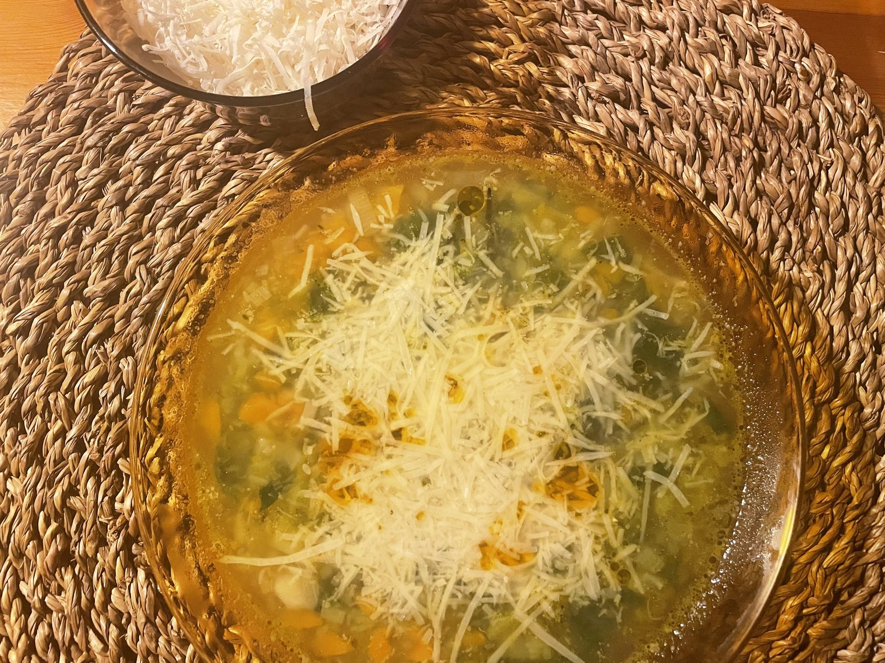

Minestrone
Ingredients
4×
- 1 cebolla
- 2 zanahorias
- 1 rama de apio
- 1 calabacín
- 2 patatas
- aceite de oliva
- 1.5 l de agua o caldo de verduras
- 2 puñados de espinacas

Preparación
Paso 1
Picar 1 cebolla, 2 zanahorias, 1 rama de apio, 1 calabacín y 2 patatas en dados.
Paso 2
Sofreír la cebolla, la zanahoria y el apio con un poco de aceite de oliva.
Paso 3
Añadir la patata y el calabacín, cubrir con 1.5 l de agua o caldo de verduras y cocer 30min.
Paso 4
Al final, añadir 2 puñados de espinacas, salpimentar y servir.